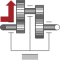

LossyGearGear with mesh efficiency and bearing friction (stuck/rolling possible) |

|
Information
This information is part of the Modelica Standard Library maintained by the Modelica Association.
This component models the gear ratio and the losses of a standard gear box in a reliable way including the stuck phases that may occur at zero speed. The gear boxes that can be handled are fixed in the ground or on a moving support, have one input and one output shaft, and are essentially described by the equations:
flange_a.phi = i*flange_b.phi;
-(flange_b.tau - tau_bf_b) = i*eta_mf*(flange_a.tau - tau_bf_a);
// or -flange_b.tau = i*eta_mf*(flange_a.tau - tau_bf_a - tau_bf_b/(i*eta_mf));
where
- i is the constant gear ratio,
- eta_mf = eta_mf(w_a) is the mesh efficiency due to the friction between the teeth of the gear wheels,
- tau_bf_a = tau_bf_a(w_a) is the bearing friction torque on the flange_a side,
- tau_bf_b = tau_bf_b(w_a) is the bearing friction torque on the flange_b side, and
- w_a = der(flange_a.phi) is the speed of flange_a
The loss terms "eta_mf", "tau_bf_a" and "tau_bf_b" are functions of the absolute value of the input shaft speed w_a and of the energy flow direction. They are defined by parameter lossTable[:,5] where the columns of this table have the following meaning:
| |w_a| | eta_mf1 | eta_mf2 | |tau_bf1| | |tau_bf2| |
| ... | ... | ... | ... | ... |
| ... | ... | ... | ... | ... |
with
| |w_a| | Absolute value of angular velocity of input shaft flange_a |
| eta_mf1 | Mesh efficiency in case that flange_a is driving |
| eta_mf2 | Mesh efficiency in case that flange_b is driving |
| |tau_bf1| | Absolute resultant bearing friction torque with respect to flange_a
in case that flange_a is driving (= |tau_bf_a*eta_mf1 + tau_bf_b/i|) |
| |tau_bf2| | Absolute resultant bearing friction torque with respect to flange_a
in case that flange_b is driving (= |tau_bf_a/eta_mf2 + tau_bf_b/i|) |
With these variables, the mesh efficiency and the bearing friction are formally defined as:
if (flange_a.tau - tau_bf_a)*w_a > 0 or
(flange_a.tau - tau_bf_a) == 0 and w_a > 0 then
eta_mf := eta_mf1
tau_bf := tau_bf1
elseif (flange_a.tau - tau_bf_a)*w_a < 0 or
(flange_a.tau - tau_bf_a) == 0 and w_a < 0 then
eta_mf := 1/eta_mf2
tau_bf := tau_bf2
else // w_a == 0
eta_mf and tau_bf are computed such that der(w_a) = 0
end if;
-flange_b.tau = i*(eta_mf*flange_a.tau - tau_bf);
Note, that the losses are modeled in a physically meaningful way taking into account that at zero speed the movement may be locked due to the friction in the gear teeth and/or in the bearings. Due to this important property, this component can be used in situations where the combination of the components Modelica.Mechanics.Rotational.IdealGear and Modelica.Mechanics.Rotational.GearEfficiency will fail because, e.g., chattering occurs when using the Modelica.Mechanics.Rotational.GearEfficiency model.
Acknowledgement:
- The essential idea to model efficiency in this way is from Christoph Pelchen, ZF Friedrichshafen.
- The article (Pelchen et.al. 2002), see Literature below, and the first implementation of LossyGear (up to version 3.1 of package Modelica) contained a bug leading to a non-converging solution in cases where the driving side is not obvious. This was pointed out by Christian Bertsch and Max Westenkirchner, Bosch, and Christian Bertsch proposed a concrete solution how to fix this bug, see Literature below.
Literature
- Pelchen C., Schweiger C., and Otter M.: "Modeling and Simulating the Efficiency of Gearboxes and of Planetary Gearboxes," in Proceedings of the 2nd International Modelica Conference, Oberpfaffenhofen, Germany, pp. 257-266, The Modelica Association and Institute of Robotics and Mechatronics, Deutsches Zentrum für Luft- und Raumfahrt e. V., March 18-19, 2002.
- Bertsch C. (2009): "Problem with model LossyGear and a proposed solution", Ticket #108, Sept. 11, 2009.
Parameters (4)
| useSupport |
Value: false Type: Boolean Description: = true, if support flange enabled, otherwise implicitly grounded |
|---|---|
| useHeatPort |
Value: false Type: Boolean Description: =true, if heatPort is enabled |
| ratio |
Value: Type: Real Description: Transmission ratio (flange_a.phi/flange_b.phi) |
| lossTable |
Value: [0, 1, 1, 0, 0] Type: Real[:,5] Description: Array for mesh efficiencies and bearing friction depending on speed |
Connectors (4)
| flange_a |
Type: Flange_a Description: Flange of left shaft |
|
|---|---|---|
| flange_b |
Type: Flange_b Description: Flange of right shaft |
|
| support |
Type: Support Description: Support/housing of component |
|
| heatPort |
Type: HeatPort_a Description: Optional port to which dissipated losses are transported in form of heat |
Used in Examples (4)
|
Modelica.Mechanics.Rotational.Examples Example to show that gear efficiency may lead to stuck motion |
|
|
Modelica.Mechanics.Rotational.Examples Example to show combination of LossyGear and BearingFriction |
|
|
Modelica.Mechanics.Rotational.Examples Example that failed in the previous version of the LossyGear version |
|
|
Modelica.Mechanics.Rotational.Examples Demonstrate the modeling of heat losses |
Used in Components (1)
|
Modelica.Mechanics.Rotational.Components Realistic model of a gearbox (based on LossyGear) |